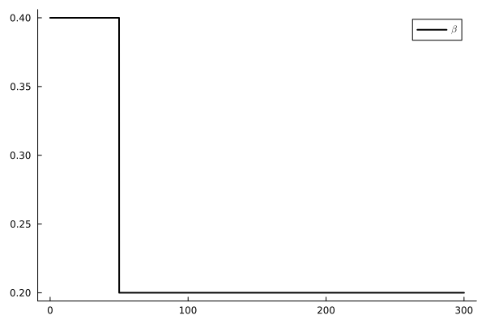
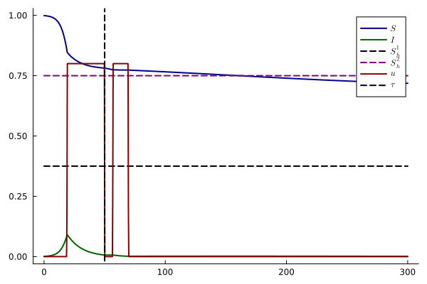
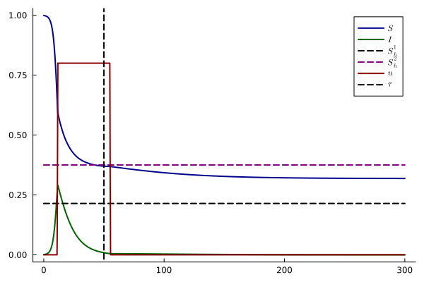
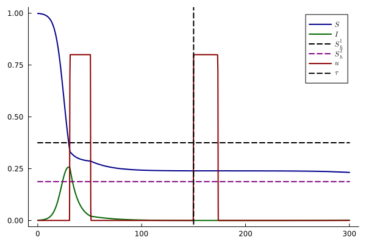
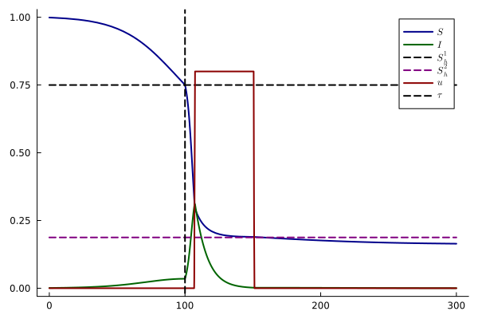

using OptimalControl
using NLPModelsIpopt
using DifferentialEquations
using Plots
using Plots.PlotMeasures
using LaTeXStrings
using Rootsfunction beta(t, τ, β1, β2, k=300)
return β1 + (β2 - β1) / (1 + exp(-k * (t - τ)))
endbeta (generic function with 2 methods)tf_ = 300
τ = 50
γ_ = 0.15
β11 = 0.4
β12 = 0.2
S0_ = 0.999
I0_ = 0.001
Q_ = 35
β21 = 0.7
β22 = 0.4
umax_ = 0.8
k = 300 # regularization parameter
plot(t -> beta(t, τ, β11, β12, k), 0, tf_, label = L"$\beta$", color = :black, lw = 2, grid = false)
function SIRocp2beta(T, S0, I0, Q, τ, β1, β2, γ, umax,k)
ocp = @def begin
t ∈ [0, T], time
x = (S, I, C) ∈ R^3, state
u ∈ R, control
S(0) == S0
I(0) == I0
C(0) == Q
C(T) ≥ 0.0
0 ≤ u(t) ≤ umax
0.0 ≤ I(t) ≤ 1.0
0.0 ≤ S(t) ≤ 1.0
ẋ(t) == [-(1 - u(t)) * beta(t, τ, β1, β2, k) * S(t) * I(t),
(1 - u(t)) * beta(t, τ, β1, β2, k) * S(t) * I(t) - γ * I(t),
-u(t)]
-S(T) → min
end
sol = nothing
for N in [50, 100, 200,300, 400, 500,600,700,800,900,1000]
sol = solve(ocp, :direct, :adnlp, :ipopt;
disc_method = :gauss_legendre_3,
grid_size=N,
init=sol,
tol=1e-8,
display=true)
end
return sol
endSIRocp2beta (generic function with 1 method)sol1_ = SIRocp2beta(tf_, S0_, I0_, Q_, τ, β11, β12, γ_, umax_, k)
sol2_ = SIRocp2beta(tf_, S0_, I0_, Q_, τ, β21, β22, γ_, umax_, k)CTModels.Solution{CTModels.TimeGridModel{Vector{Float64}}, CTModels.TimesModel{CTModels.FixedTimeModel{Int64}, CTModels.FixedTimeModel{Int64}}, CTModels.StateModelSolution{CTModels.var"#112#134"{Interpolations.Extrapolation{Vector{Float64}, 1, Interpolations.GriddedInterpolation{Vector{Float64}, 1, Vector{Vector{Float64}}, Interpolations.Gridded{Interpolations.Linear{Interpolations.Throw{Interpolations.OnGrid}}}, Tuple{Vector{Float64}}}, Interpolations.Gridded{Interpolations.Linear{Interpolations.Throw{Interpolations.OnGrid}}}, Interpolations.Line{Nothing}}}}, CTModels.ControlModelSolution{CTModels.var"#113#135"{Interpolations.Extrapolation{Vector{Float64}, 1, Interpolations.GriddedInterpolation{Vector{Float64}, 1, Vector{Vector{Float64}}, Interpolations.Gridded{Interpolations.Linear{Interpolations.Throw{Interpolations.OnGrid}}}, Tuple{Vector{Float64}}}, Interpolations.Gridded{Interpolations.Linear{Interpolations.Throw{Interpolations.OnGrid}}}, Interpolations.Line{Nothing}}}}, CTModels.VariableModelSolution{Vector{Float64}}, CTModels.var"#116#138"{Interpolations.Extrapolation{Vector{Float64}, 1, Interpolations.GriddedInterpolation{Vector{Float64}, 1, Vector{Vector{Float64}}, Interpolations.Gridded{Interpolations.Linear{Interpolations.Throw{Interpolations.OnGrid}}}, Tuple{Vector{Float64}}}, Interpolations.Gridded{Interpolations.Linear{Interpolations.Throw{Interpolations.OnGrid}}}, Interpolations.Line{Nothing}}}, Float64, CTModels.DualModel{CTModels.var"#119#141"{CTModels.var"#117#139"}, Vector{Float64}, CTModels.var"#122#144"{CTModels.var"#120#142"}, CTModels.var"#125#147"{CTModels.var"#123#145"}, CTModels.var"#127#149"{CTModels.var"#126#148"}, CTModels.var"#130#152"{CTModels.var"#129#151"}, Vector{Float64}, Vector{Float64}}, CTModels.SolverInfos{Dict{Symbol, Any}}}case 1: $\beta_1 > \beta_2$ (two interventions)
gr()
plot(
t -> state(sol1_)(t)[1], 0, tf_,
label = L"$S$", color = :darkblue, lw = 2,
grid = false
)
plot!(
t -> state(sol1_)(t)[2], 0, tf_,
label = L"$I$", color = :darkgreen, lw = 2
)
plot!(
[0, tf_], [γ_/ β11, γ_/ β11],
label = L"$S_h^1$", lw = 2, ls = :dash, color = :black
)
plot!(
[0, tf_], [γ_/ β12, γ_/ β12],
label = L"$S_h^2$", lw = 2, ls = :dash, color = :purple
)
plot!(
t -> control(sol1_)(t)[1], 0, tf_,
label = L"$u$", color = :darkred, lw = 2,
grid = false
)
vline!([τ], lw=2, color = "black", linestyle = :dash, label = L"$\tau$")
case 1bis: $\beta_1 > \beta_2$ (one interventions)
gr()
plot(
t -> state(sol2_)(t)[1], 0, tf_,
label = L"$S$", color = :darkblue, lw = 2,
grid = false
)
plot!(
t -> state(sol2_)(t)[2], 0, tf_,
label = L"$I$", color = :darkgreen, lw = 2
)
plot!(
[0, tf_], [γ_/ β21, γ_/ β21],
label = L"$S_h^1$", lw = 2, ls = :dash, color = :black
)
plot!(
[0, tf_], [γ_/ β22, γ_/ β22],
label = L"$S_h^2$", lw = 2, ls = :dash, color = :purple
)
plot!(
t -> control(sol2_)(t)[1], 0, tf_,
label = L"$u$", color = :darkred, lw = 2,
grid = false
)
vline!([τ], lw=2, color = "black", linestyle = :dash, label = L"$\tau$")
sol3_ = SIRocp2beta(tf_, S0_, I0_, Q_, 150, 0.4, 0.8, γ_, umax_, k)
sol4_ = SIRocp2beta(tf_, S0_, I0_, Q_, 100, 0.2, 0.8, γ_, umax_, k)CTModels.Solution{CTModels.TimeGridModel{Vector{Float64}}, CTModels.TimesModel{CTModels.FixedTimeModel{Int64}, CTModels.FixedTimeModel{Int64}}, CTModels.StateModelSolution{CTModels.var"#112#134"{Interpolations.Extrapolation{Vector{Float64}, 1, Interpolations.GriddedInterpolation{Vector{Float64}, 1, Vector{Vector{Float64}}, Interpolations.Gridded{Interpolations.Linear{Interpolations.Throw{Interpolations.OnGrid}}}, Tuple{Vector{Float64}}}, Interpolations.Gridded{Interpolations.Linear{Interpolations.Throw{Interpolations.OnGrid}}}, Interpolations.Line{Nothing}}}}, CTModels.ControlModelSolution{CTModels.var"#113#135"{Interpolations.Extrapolation{Vector{Float64}, 1, Interpolations.GriddedInterpolation{Vector{Float64}, 1, Vector{Vector{Float64}}, Interpolations.Gridded{Interpolations.Linear{Interpolations.Throw{Interpolations.OnGrid}}}, Tuple{Vector{Float64}}}, Interpolations.Gridded{Interpolations.Linear{Interpolations.Throw{Interpolations.OnGrid}}}, Interpolations.Line{Nothing}}}}, CTModels.VariableModelSolution{Vector{Float64}}, CTModels.var"#116#138"{Interpolations.Extrapolation{Vector{Float64}, 1, Interpolations.GriddedInterpolation{Vector{Float64}, 1, Vector{Vector{Float64}}, Interpolations.Gridded{Interpolations.Linear{Interpolations.Throw{Interpolations.OnGrid}}}, Tuple{Vector{Float64}}}, Interpolations.Gridded{Interpolations.Linear{Interpolations.Throw{Interpolations.OnGrid}}}, Interpolations.Line{Nothing}}}, Float64, CTModels.DualModel{CTModels.var"#119#141"{CTModels.var"#117#139"}, Vector{Float64}, CTModels.var"#122#144"{CTModels.var"#120#142"}, CTModels.var"#125#147"{CTModels.var"#123#145"}, CTModels.var"#127#149"{CTModels.var"#126#148"}, CTModels.var"#130#152"{CTModels.var"#129#151"}, Vector{Float64}, Vector{Float64}}, CTModels.SolverInfos{Dict{Symbol, Any}}}case 2: $\beta_1 < \beta_2$ (two interventions)
gr()
plot(
t -> state(sol3_)(t)[1], 0, tf_,
label = L"$S$", color = :darkblue, lw = 2,
grid = false
)
plot!(
t -> state(sol3_)(t)[2], 0, tf_,
label = L"$I$", color = :darkgreen, lw = 2
)
plot!(
[0, tf_], [γ_/ 0.4, γ_/ 0.4],
label = L"$S_h^1$", lw = 2, ls = :dash, color = :black
)
plot!(
[0, tf_], [γ_/ 0.8, γ_/ 0.8],
label = L"$S_h^2$", lw = 2, ls = :dash, color = :purple
)
plot!(
t -> control(sol3_)(t)[1], 0, tf_,
label = L"$u$", color = :darkred, lw = 2,
grid = false
)
vline!([150], lw=2, color = "black", linestyle = :dash, label = L"$\tau$")
case 2bis: $\beta_1 < \beta_2$ (one interventions)
gr()
plot(
t -> state(sol4_)(t)[1], 0, tf_,
label = L"$S$", color = :darkblue, lw = 2,
grid = false
)
plot!(
t -> state(sol4_)(t)[2], 0, tf_,
label = L"$I$", color = :darkgreen, lw = 2
)
plot!(
[0, tf_], [γ_/ 0.2, γ_/ 0.2],
label = L"$S_h^1$", lw = 2, ls = :dash, color = :black
)
plot!(
[0, tf_], [γ_/ 0.8, γ_/ 0.8],
label = L"$S_h^2$", lw = 2, ls = :dash, color = :purple
)
plot!(
t -> control(sol4_)(t)[1], 0, tf_,
label = L"$u$", color = :darkred, lw = 2,
grid = false
)
vline!([100], lw=2, color = "black", linestyle = :dash, label = L"$\tau$")